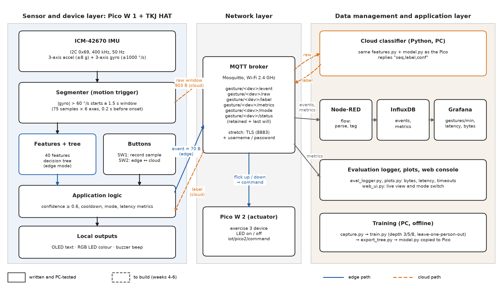
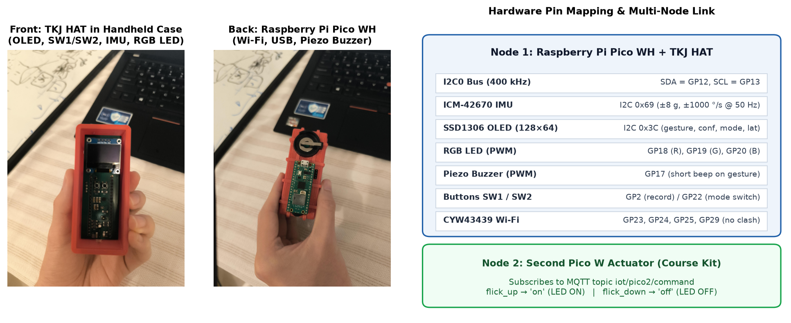
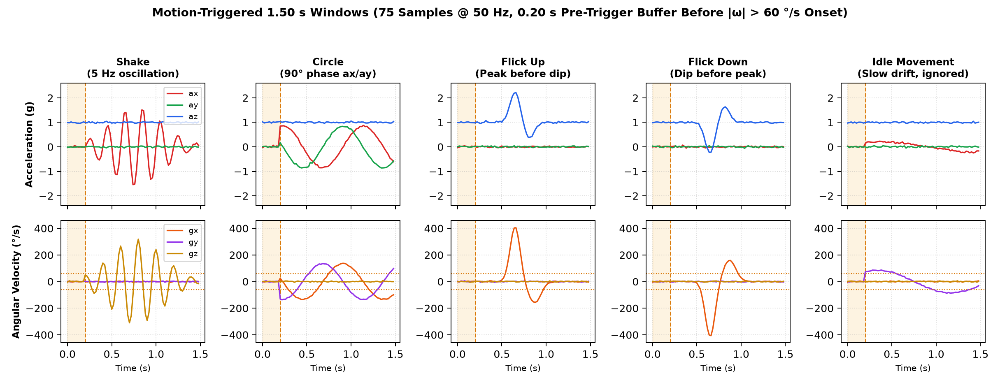
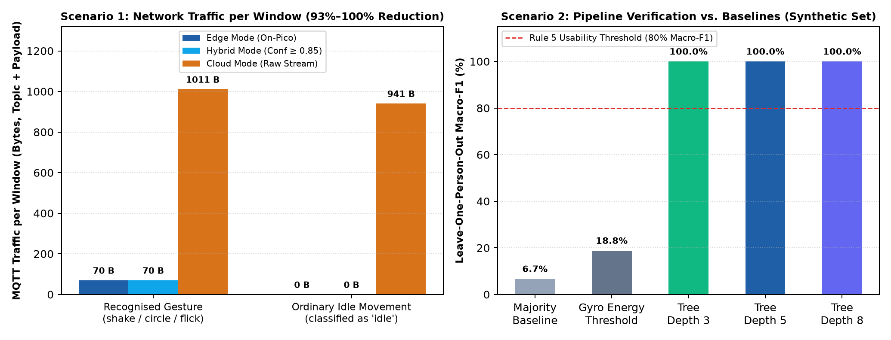

Edge-ML Gesture Controller:
On-Device Gesture Recognition and MQTT Control with the Pico W
Keywords: Raspberry Pi Pico W, IMU, gesture recognition, decision tree, edge machine learning, MQTT, Node-RED, InfluxDB, Grafana
1. Introduction
We build a small wearable or hand-held gesture controller using a Raspberry Pi Pico W fitted with the TKJ HAT (ICM-42670 6-axis IMU, SSD1306 OLED, RGB LED, buzzer, and buttons). When the user performs a hand gesture, the controller recognises it, shows immediate local feedback on the OLED, RGB LED, and buzzer, switches an actuator LED on a second Pico W over MQTT, and logs telemetry to InfluxDB and Grafana.
Our core research question is where the recognition should run: for a microcontroller like the Pico W, does classifying gestures on the device (edge mode) instead of streaming raw sensor windows to a server (cloud mode) reduce network traffic and latency enough to matter, and what does it cost in accuracy, model size, and on-device compute time? We implement both modes using the exact same feature extractor and decision tree so that the comparison isolates where the computation happens.
| Requirement | Implementation | Category |
|---|---|---|
| Sensor data collection | ICM-42670 IMU over I2C (400 kHz): 3-axis acceleration (±8 g) and 3-axis gyroscope (±1000 °/s) at 50 Hz | Required |
| Data processing on Pico W | Motion-triggered 1.5 s windows (75 samples), 40 time-domain features, decision tree inference, confidence gate (≥ 0.6) & cooldown | Required |
| Output control | Local SSD1306 OLED text, RGB LED colour & piezo buzzer per gesture; remote LED toggle on a second Pico W over MQTT | Required |
| Wireless connectivity | MQTT over 2.4 GHz Wi-Fi (umqtt.simple on Pico W, Mosquitto broker) | Optional 1 |
| Edge machine learning | Decision tree trained on group recordings, exported to native MicroPython and executed on the Pico W | Optional 2 |
| Cloud integration | Node-RED pipeline (`stack/nodered/flows.json`) storing events and metrics in InfluxDB v2, visualised in Grafana | Optional 3 |
| Security | MQTT over TLS with broker authentication (stretch goal) | Stretch |
2. Architecture

2.1 Sensor and Device Layer
The Pico W polls the ICM-42670 IMU at 50 Hz over I2C. A motion-triggered segmenter (`pico/features.py`) monitors angular velocity; when $|\omega| > 60^\circ/\text{s}$, it captures a 1.5 s window (75 samples × 6 axes) including a 0.2 s pre-trigger buffer (10 samples) before onset. In edge mode, the Pico extracts 40 features and executes the compiled decision tree (`pico/model.py`), driving the OLED, RGB LED, and buzzer immediately.


2.2 Network Layer
Devices communicate via MQTT over 2.4 GHz Wi-Fi through a Mosquitto broker. Background reconnection (`pico/net.py`) ensures local gesture recognition never blocks if Wi-Fi or the broker drops.
| Topic | Direction | Payload & Size |
|---|---|---|
gesture/DEV/event | Pico → Broker | JSON: gesture, confidence, mode (~70 bytes including topic) |
gesture/DEV/raw | Pico → Server | Cloud/hybrid offload only. Binary: 3-byte header + 6 × 75 int16 = 903 bytes |
gesture/DEV/label | Server → Pico | Cloud/hybrid reply: seq,label,confidence |
gesture/DEV/metrics | Pico → Broker | JSON per window: sequence number, mode, gesture, confidence, latency (ms), bytes |
gesture/DEV/mode | Console → Pico | edge, cloud, or hybrid remote mode switch |
gesture/DEV/status | Pico → Broker | online / offline (retained + MQTT Last Will) |
iot/pico2/command | Pico 1 → Pico 2 | on on flick_up, off on flick_down |
2.3 Data Management and Application Layer
The Python cloud classifier (`pc/cloud_classifier.py`) imports the same `features.py` and `model.py` as the Pico so both modes produce identical classifications. Node-RED (`stack/nodered/flows.json`) writes events (`gestures` measurement) and window telemetry (`metrics` measurement) into InfluxDB v2, and Grafana (`stack/grafana/dashboards/gesture_controller.json`) displays gestures per minute, decision latency by mode, payload bytes, confidence, and cloud timeouts.
3. Functionalities
- Sensing: 6-axis IMU sampling at 50 Hz (±8 g, ±1000 °/s).
- Motion-triggered segmentation: Aligns 1.5 s windows on movement onset with a 0.2 s pre-trigger buffer.
- On-device 5-class classification:
shake,circle,flick_up,flick_down, andidle(non-gesture movements). - Local multi-modal feedback: OLED text, gesture-specific RGB LED colour, and piezo buzzer beep.
- Second-node actuation: Controls a second Pico W LED via
iot/pico2/command. - Cloud & hybrid modes: Raw binary window streaming (903 B) and remote classification over MQTT, switchable via button SW2 or MQTT.
- Time-series storage & dashboard: Automated Docker Compose stack with Mosquitto, Node-RED, InfluxDB v2, and provisioned Grafana panels.
- Offline resilience: Non-blocking Wi-Fi/MQTT state machine; edge mode continues working during network outages.
- Labelled data acquisition: On-board recorder (`pico/collect.py`) and USB serial capture (`pc/capture.py`) plus a guided web pacer (`pc/web_ui.py`).
4. Methods & Tools
Each 1.5 s window (75 samples × 6 axes) is summarised into 40 time-domain features: per axis, the mean, standard deviation, minimum, maximum, mean-crossing count, and normalised peak-before-dip order (which separates flick_up from flick_down), plus the mean and standard deviation of the 3D acceleration and angular velocity magnitudes.
We train scikit-learn decision trees of maximum depth 3, 5, and 8 using Leave-One-Person-Out (LOPO) cross-validation (`pc/train.py`) and compare them against two baselines (majority class and rotation-energy thresholds). Our custom exporter (`pc/export_tree.py`) compiles the trained tree into zero-dependency MicroPython `if/else` statements.
5. Evaluation Plan & Pre-Registered Decision Rules
- Scenario 1 (Edge vs. Cloud Classification): 20 repetitions per class per member in both Edge and Cloud modes (~300 windows/mode), plus a 2-minute Wi-Fi drop test. Measured on the Pico using
ticks_ms(2 ms polling resolution) and exact MQTT topic + payload byte counts. - Scenario 2 (Tree Depth 3 vs. 5 vs. 8): LOPO macro-F1, per-class recall, confusion matrices, code size in bytes, RAM footprint, and on-device inference time (`pico/bench.py`).
- Rule 1 (Traffic): Edge mode passes if mean bytes/window ≤ 10% of cloud mode (~70 B vs. ~1,030 B for gestures; 0 B vs. ~960 B for idle movements).
- Rule 2 (Latency): Edge mode is faster if the 95% bootstrap CI of the median latency difference (Cloud − Edge) is above 0 ms, and user-noticeable if > 100 ms.
- Rule 3 (Robustness): 100% of gestures during the 2-minute Wi-Fi outage produce local feedback in Edge mode.
- Rule 4 (Model Depth): Deploy the smallest tree depth within 2 percentage points of the highest LOPO macro-F1.
- Rule 5 (Generalisation): Usable for an unseen person if LOPO macro-F1 ≥ 0.80 and exceeds both baselines.
6. Results & Discussion

pc/plots.py and pc/train.py will replace this note once recorded.
7. References
- R. Islam and I. Sánchez Milara, TKJHAT SDK, University of Oulu, MIT License. github.com/unioulu-ubicomp-programming-courses/JTKJ-PicoRTOS-Project
- TDK InvenSense, ICM-42670-P 6-Axis MEMS MotionTracking Device Datasheet.
- F. Pedregosa et al., “Scikit-learn: Machine learning in Python,” JMLR, vol. 12, pp. 2825–2830, 2011.
- OASIS Standard, MQTT Version 3.1.1, 2014.
- University of Helsinki, Internet of Things MOOC, 2026–2027.